2024年北京市中考化学真题 原卷解析
化学
本试卷满分70分，考试时间70分钟。
可能用到的相对原子质量：H-1 C-12 N-14 O-16 Ti-48 Fe-56
第一部分
本部分共25题，每题1分，共25分。在每题列出的四个选项中，选出最符合题目要求的一项。
1. 下列变化属于化学变化的是
A. 冰雪融化B. 酒精挥发C. 镁条燃烧D. 矿石粉碎
【答案】C
【解析】
【详解】A、冰雪融化过程中只是状态发生改变，没有新物质生成，属于物理变化，不符合题意；
B、酒精挥发过程中由液态变为气态，只是状态发生改变，没有新物质生成，属于物理变化，不符合题意；
C、镁条燃烧过程中有新物质氧化镁生成，属于化学变化，符合题意；
D、矿石粉碎过程中只是形状发生改变，没有新物质生成，属于物理变化，不符合题意。
故选C。
2. 如表列出了某食品的营养成分，其中含量最高的是
项目 | 每100g |
蛋白质 脂肪 碳水化合物 钠 | 35.0g 5.6g 4.5g 180mg |
A. 蛋白质B. 脂肪C. 碳水化合物D. 钠
【答案】A
【解析】
【详解】根据某食品的营养成分表可知，蛋白质含量= ；脂肪含量=
；脂肪含量= ；碳水化合物含量=
；碳水化合物含量= ；180mg=0.18g，钠含量=
；180mg=0.18g，钠含量= 。通过计算可知，蛋白质含量最高。
。通过计算可知，蛋白质含量最高。
综上所述：选择A。
3. 下列物质属于纯净物的是
A. 大理石B. 氯化钾C. 汽水D. 蔗糖溶液
【答案】B
【解析】
【详解】纯净物是由一种物质组成的。
A、大理石的主要成分是碳酸钙，还含有其他杂质，属于混合物，不符合题意；
B、氯化钾只由氯化钾一种物质组成，属于纯净物，符合题意；
C、汽水中含有水、二氧化碳、糖等多种物质，属于混合物，不符合题意；
D、蔗糖溶液中含有蔗糖和水，属于混合物，不符合题意。
故选B。
深入打好蓝天、碧水、净土保卫战，持续优化生态环境。
4. 垃圾分类对保护土壤具有重要意义、下列属于厨余垃圾的是
A. 空易拉罐B. 空矿泉水瓶C. 土豆皮D. 废旧报纸
【答案】C
【解析】
【详解】空易拉罐、空矿泉水瓶、废旧报纸可回收再利用，属于可回收垃圾；土豆皮属于厨余垃圾。
故选C。
5. 为系统治理水资源、水环境、水生态，提倡的做法是
A. 任意排放生活污水B. 防治海洋垃圾污染
C. 农业上过量使用农药D. 景观用水大量使用自来水
【答案】B
【解析】
【详解】A、任意排放生活污水，会造成水污染，错误；
B、防治海洋垃圾污染，有利于系统治理水资源、水环境、水生态，正确；
C、农业上过量使用农药，会造成土壤、水源污染，错误；
D、景观用水大量使用自来水，会浪费淡水资源，错误。
故选B。
6. 为防治大气污染，下列做法不可行的是
A. 加强扬尘管控B. 使用清洁能源
C. 直接排放工业废气D. 加强大气质量监测
【答案】C
【解析】
【详解】A、加强扬尘管控，可以减少空气污染，保护环境，不符合题意；
B、使用清洁能源，可以减少化石燃料的使用，减少污染物的排放，保护环境，不符合题意；
C、直接排放工业废气，会污染空气，符合题意；
D、加强大气质量监测，可以减少空气污染，保护环境，不符合题意。
故选C。
7. 粗盐中难溶性杂质的去除实验中，蒸发滤液不需要用到的仪器是
A. 蒸发皿B. 酒精灯C. 玻璃棒D. 量筒
【答案】D
【解析】
【详解】蒸发所需仪器为：铁架台、酒精灯、蒸发皿、玻璃棒，无需量筒。
故选D。
8. 下列标志表示“禁止烟火”的是
A.  B.
B.  C.
C.  D.
D. 
【答案】B
【解析】
【详解】A、该标志是腐蚀品标志，不符合题意；
B、该标志是禁止烟火标志，符合题意；
C、该标志是爆炸品标志，不符合题意；
D、该标志是禁止放易燃物标志，不符合题意。
故选B。
9. 下列物质混合后产生白色沉淀的是
A.  溶液和
溶液和 溶液B.
溶液B.  溶液和
溶液和
C. NaOH溶液和稀硫酸D.  溶液和稀盐酸
溶液和稀盐酸
【答案】A
【解析】
【详解】A、碳酸钠和氢氧化钙反应生成碳酸钙和氢氧化钠，产生白色沉淀，符合题意；
B、过氧化氢在二氧化锰的催化下分解生成水和氧气，产生气泡，不符合题意；
C、氢氧化钠和稀硫酸反应生成硫酸钠和水，无明显现象，不符合题意；
D、碳酸氢钠和稀盐酸反应生成氯化钠、二氧化碳和水，产生气泡，不符合题意。
故选A。
2024年6月，嫦娥六号完成世界首次月背采样，五星红旗在月背成功展开。
10. 嫦娥六号探测器钻杆主体采用铝基碳化硅材料。铝、碳、硅是三种不同的元素，决定元素种类的是
A. 质子数B. 中子数C. 核外电子数D. 相对原子质量
【答案】A
【解析】
【详解】元素是具有相同质子数（即核电荷数）的一类原子的总称；铝、碳、硅是三种不同的元素，决定元素种类的是质子数。
故选A。
11. 制作嫦娥六号月背展示国旗的原材料是玄武岩。玄武岩的组成元素有硅、铝、铁、钙等，其中属于非金属元素的是
A. 硅B. 铝C. 铁D. 钙
【答案】A
【解析】
【详解】A、硅是“石”字旁，属于非金属元素，故A符合题意；
B、铝是“金”字旁，属于金属元素，故B不符合题意；
C、铁是“金”字旁，属于金属元素，故C不符合题意；
D、钙是“金”字旁，属于金属元素，故D不符合题意。
故选A。
12. 下列操作正确的是
A. 倾倒液体 B. 加热液体
B. 加热液体
C. 读取液体体积 D. 稀释浓硫酸
D. 稀释浓硫酸
【答案】D
【解析】
【详解】A、向试管中倾倒液体药品时，瓶塞要倒放，标签要对准手心，瓶口紧挨试管口，图示操作瓶塞要没有倒放，瓶口没有紧挨试管口，错误；
B、加热液体时，用酒精灯外焰加热，且液体体积不超过试管容积的三分之一，试管夹应该夹在试管的中上部，错误；
C、量筒读数时视线要与量筒内液体的凹液面的最低处保持水平，错误；
D、浓硫酸溶于水放出大量的热，密度大于水，稀释浓硫酸时，要把浓硫酸缓缓地沿器壁注入水中，同时用玻璃棒不断搅拌，以使热量及时的扩散，一定不能把水注入浓硫酸中，正确。
故选D。
13. 下列关于物质用途 描述不正确的是
描述不正确的是
A.  用于食品防腐B. NaCl用作调味品C. 干冰用于人工降雨D.
用于食品防腐B. NaCl用作调味品C. 干冰用于人工降雨D.  用作保护气
用作保护气
【答案】A
【解析】
【详解】A、氧气具有氧化性，会加速食品的腐败变质，不能用于食品防腐，符合题意；
B、氯化钠有咸味，可用作调味品，不符合题意；
C、干冰升华吸热，能使周围温度降低，可用于人工降雨，不符合题意；
D、氮气化学性质稳定，可填充于食品包装中用于防腐，不符合题意。
故选A。
二十四节气蕴含丰富的文化内涵，反映了我国劳动人民的智慧。
14. 春分“竖蛋”。蛋壳的主要成分是碳酸钙，其化学式为
A.  B. CaOC.
B. CaOC.  D.
D.
【答案】C
【解析】
【详解】碳酸钙由钙离子和碳酸根离子构成，钙离子显+2价，碳酸根离子显-2价，化学式为：CaCO3。
故选C。
15. 清明放风筝。下列与风筝制作、放飞相关的部件中，用到金属材料的是
A. 竹质骨架B. 纸质风筝面C. 棉质捆扎线D. 不锈钢手握轮
【答案】D
【解析】
【详解】A、竹质骨架属于天然材料，错误；
B、纸质风筝面属于天然材料，错误；
C、棉质捆扎线属于天然材料，错误；
D、不锈钢手握轮是由不锈钢制成，不锈钢属于金属材料，正确；
故选D。
16. 秋分吃桂花糕。桂花中含甜菜碱（ ），下列关于的说法正确的是
），下列关于的说法正确的是
A. 由三种元素组成B. 氢、氮元素质量比为11：14
C. 氢元素的质量分数最大D. 碳、氧原子个数比为2：5
【答案】B
【解析】
【详解】A、由化学式可知，甜菜碱由C、H、N、O四种元素组成，不符合题意；
B、由化学式可知，甜菜碱中氢、氮元素的质量比为：11:14，符合题意；
C、甜菜碱中C、H、N、O元素的质量比为： ，故碳元素的质量分数最大，不符合题意；
，故碳元素的质量分数最大，不符合题意；
D、由化学式可知，甜菜碱分子中碳、氧原子个数比为：5:2，不符合题意。
故选B。
为实现“双碳”目标，我国积极推动能源绿色低碳安全高效转型。
17. 下列燃料在中充分燃烧时，不会产生 的是
的是
A.  B. COC.
B. COC.  D.
D. 
【答案】D
【解析】
【详解】A、甲烷充分燃烧生成二氧化碳和水，不符合题意；
B、一氧化碳充分燃烧生成二氧化碳，不符合题意；
C、乙醇充分燃烧生成二氧化碳和水，不符合题意；
D、氢气燃烧生成水，符合题意。
故选D。
18. 为实现高效光催化分解水制氢，科研人员开展 纳米复合光催化材料的研究。铌（Nb）在元素周期表中的原子序数是41，下列关于Nb的说法不正确的是
纳米复合光催化材料的研究。铌（Nb）在元素周期表中的原子序数是41，下列关于Nb的说法不正确的是
A. 质子数是41B. 核电荷数是41C. 原子质量是41D. 核外电子数是41
【答案】C
【解析】
【详解】A、原子序数=质子数，铌（Nb）的原子序数是41，则质子数是41，说法正确，不符合题意；
B、原子序数=核电荷数，铌（Nb）的原子序数是41，则核电荷数是41，说法正确，不符合题意；
C、原子质量约等于质子数加中子数，根据铌（Nb）的原子序数是41，不能确定原子质量是 41，说法错误，符合题意；
D、原子序数=核外电子数，铌（Nb）的原子序数是41，则核外电子数是41，说法正确，不符合题意。
故选C。
19. 与在一定条件下反应生成和CO，该制氢反应的微观示意图如图所示：

图中丁的微观图示为
A
 B.
B.  C.
C.  D.
D. 
【答案】D
【解析】
【详解】与在一定条件下反应生成和CO，该反应的化学方程式为 CH₄ + CO₂ 2H₂ + 2CO。根据方程式和微观示意图可知，丁中含有2个一氧化碳分子，1个一氧化碳由一个碳原子和一个氧原子构成，图中丁的微观图示为。
2H₂ + 2CO。根据方程式和微观示意图可知，丁中含有2个一氧化碳分子，1个一氧化碳由一个碳原子和一个氧原子构成，图中丁的微观图示为。
故选D。
20. 甲烷水蒸气重整制氢的反应为 ，下列说法不正确的是
，下列说法不正确的是
A. 反应涉及两种氧化物B. 反应前后氢原子个数不变
C. 生成的CO、的分子个数比为1：1D. 参加反应的、 的质量比为8：9
的质量比为8：9
【答案】C
【解析】
【详解】A、氧化物是由两种元素组成，其中一种元素是氧元素的化合物，反应中有甲烷（CH4）和水（H2O），一氧化碳（CO）和氢气（H2）生成，其中水和一氧化碳属于氧化物，说法正确，不符合题意；
B、根据质量守恒定律，反应前后原子种类和数目不变，氢原子个数不变，说法正确，不符合题意；
C、根据化学方程式可知，生成的 CO 和 H2的分子个数比为 1:3，而不是 1:1，说法错误，符合题意；
D、根据化学方程式可知，参加反应的 CH4、H2O 的质量比=（12+1×4）：（1×2+16）=16:18=8:9，说法正确，不符合题意。
故选C。
硼酸在生产生活中有广泛应用。20℃时，进行如下实验。完成下面小题。

资料：20℃时，硼酸的溶解度为5.0g；40℃时，硼酸的溶解度为8.7g。
21. ①～④所得溶液中，溶质与溶剂的质量比为1：50的是
A. ①B. ②C. ③D. ④
22. ③所得溶液的质量为
A. 104gB. 105gC. 106gD. 108g
23. 下列关于①～④的说法不正确的是
A. ①所得溶液为不饱和溶液B. 若②升温至40℃，溶质质量变大
C. 若向③中加水，溶液质量变大D. 若④升温至40℃，得到不饱和溶液
【答案】21. A 22. B 23. B
【解析】
【21题详解】
A、20℃时，硼酸的溶解度为5.0g，则该温度下，向100g水中加入2g硼酸，能全部溶解，所得溶液中溶质与溶剂的质量比为：2g：100g=1：50，符合题意；
B、②中水的质量为100g，加入硼酸的总质量为：2g+2g=4g，20℃时，硼酸的溶解度为5.0g，则该温度下，4g硼酸能完全溶解，所得溶液中溶质与溶剂的质量比为：4g：100g=1:25，不符合题意；
C、③中水的质量为100g，加入硼酸的总质量为：2g+2g+2g=6g，20℃时，硼酸的溶解度为5.0g，则该温度下，6g硼酸只能溶解5g，所得溶液中溶质与溶剂的质量比为：5g：100g=1:20，不符合题意；
D、④中水的质量为100g，加入硼酸的总质量为：2g+2g+2g+2g=8g，20℃时，硼酸的溶解度为5.0g，则该温度下，8g硼酸只能溶解5g，所得溶液中溶质与溶剂的质量比为：5g：100g=1:20，不符合题意。
故选A；
【22题详解】
③中水的质量为100g，加入硼酸的总质量为：2g+2g+2g=6g，20℃时，硼酸的溶解度为5.0g，则该温度下，6g硼酸只能溶解5g，所得溶液的质量为：100g+5g=105g。
故选B；
【23题详解】
A、由以上分析可知，①中水的质量为100g，加入硼酸的质量为2g，而20℃时，硼酸的溶解度为5.0g，即该温度下，100g水中最多可溶解5g硼酸，则①所得溶液为不饱和溶液，不符合题意；
B、由以上分析可知，②中4g硼酸完全溶解，若②升温至40℃，升温后，硼酸的溶解度增加，溶质质量不变，符合题意；
C、由以上分析可知，③中6g硼酸只能溶解5g，则若向③中加水，硼酸能继续溶解，溶液质量变大，不符合题意；
D、④中水的质量为100g，加入硼酸的总质量为8g，若④升温至40℃，40℃时，硼酸的溶解度为8.7g，即该温度下，100g水中最多可溶解8.7g硼酸，则该温度下，8g硼酸能完全溶解，得到不饱和溶液，不符合题意。
故选B。
24. 下列关于Fe在O2中燃烧的反应叙述不正确的是
A. 放出热量B. 生成黑色固体
C. 反应前后固体质量相等D. 参加反应的Fe与生成物中铁元素质量相等
【答案】C
【解析】
【详解】A、铁在氧气中燃烧放出大量的热，故叙述正确；
B、铁在氧气中燃烧生成黑色固体四氧化三铁，故叙述正确；
C、铁在氧气中燃烧生成四氧化三铁，根据质量守恒定律，反应后生成四氧化三铁的质量等于参加反应的铁丝和氧气的质量之和，故反应后固体质量增加，故叙述错误；
D、根据质量守恒定律，反应前后元素的质量不变，所以参加反应的Fe与生成物中铁元素质量相等，故叙述正确。
故选C。
25. 用如图所示装置进行实验，测定出空气中约占 （按体积计算）。下列叙述不正确的是
（按体积计算）。下列叙述不正确的是

A. ②中瓶内空气的体积约为200mLB. 可加热铁丝引燃铜匙中的白磷
C. 白磷的作用是消耗②中瓶内的D. 最终注射器活塞移至约40mL刻度线处
【答案】D
【解析】
【详解】A、根据题意打开胶塞，取出200mL水，②中瓶内空气的体积约为200mL，说法正确，不符合题意；
B、铁具有良好的导热性，可加热铁丝引燃铜匙中的白磷，说法正确，不符合题意；
C、白磷燃烧是与空气中氧气反应，能消耗瓶内的氧气，使容器内压强减小，打开弹簧夹，注射器活塞向左移动，移动的体积为消耗的氧气，说法正确，不符合题意；
D、氧气约占空气体积的五分之一，瓶内空气体积约为 200mL，消耗的氧气约为 40mL，注射器活塞向左移动40mL，最终注射器活塞会移至约 100mL-40mL=60mL 刻度线处，说法错误，符合题意。
故选D。
第二部分
本部分共14题，共45分。
【生活现象解释】
26. “九门走九车”说的是老北京内城九座城门的昔日景象。
（1）西直门走水车。水的组成元素是______。
（2）阜成门走煤车。除煤外，化石燃料还有天然气和______。
【答案】（1）氢、氧元素
（2）石油
【解析】
【小问1详解】
由水的组成实验可知，水由氢、氧元素组成；
【小问2详解】
化石燃料包括煤、石油、天然气，它们短期内均不能再生，均属于不可再生能源。
27. 大豆既能通过根系吸收肥料氮，又能利用根瘤菌固定空气中的氮。
（1）下列物质中，属于氮肥的是______（填序号）。
A.
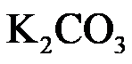
B. 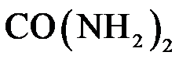
C. 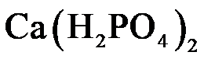
（2）空气中含氮元素的物质主要是______。
【答案】（1）B （2）氮气##N2
【解析】
【小问1详解】
A、K2CO3中只含有氮、磷、钾中的钾元素，属于钾肥，不符合题意；
B、CO(NH2)2中只含有氮、磷、钾中的氮元素，属于氮肥，符合题意；
C、Ca(H2PO4)2中只含有氮、磷、钾中的磷元素，属于磷肥，不符合题意。
故选B。
【小问2详解】
空气中含氮元素的物质主要是氮气。
28. 化学与生活息息相关。
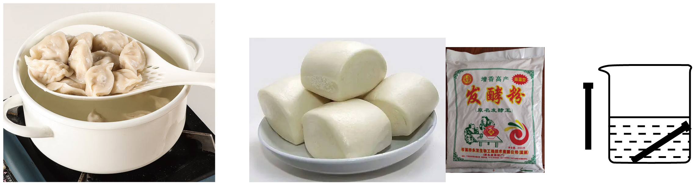
（1）捞饺子对应的分离固液混合物的实验操作是______。
（2）发酵粉（含）可用于制作面包。的俗称是______。
（3）盐酸可用于除铁锈（主要成分为
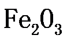
），原理为______（用化学方程式表示）。【答案】（1）过滤 （2）小苏打
（3）
【解析】
【小问1详解】
捞饺子实现了固液分离，故对应的实验操作是：过滤；
【小问2详解】
NaHCO3俗称小苏打；
【小问3详解】
铁锈的主要成分是氧化铁，氧化铁和稀盐酸反应生成氯化铁和水，该反应的化学方程式为：
。
【科普阅读理解】
29. 阅读下面科普短文。
生活中有时需要用到高浓度，供氧方式主要有氧气瓶、氧气袋和制氧机…
氧气瓶和氧气袋中的一般用深冷法制得，该方法利用物质的沸点差异，从空气中分离出。
制氧机有膜分离、变压吸附等制氧方式。膜分离制氧用到的膜材料有陶瓷、聚苯胺等，其中混合导电陶瓷分离膜的工作原理示意如图甲。变压吸附制氧常用的吸附剂是沸石分子筛。科研人员在一定条件下分别将、通过某种沸石分子筛，测定其对、的吸附情况、结果如图乙（纵坐标数值越大，代表吸附量越大）。
吸氧对于缺氧人群有一定作用，但健康人短期内高流量吸氧会对机体造成不良影响，因此不能盲目吸氧。

（原文作者刘应书、汪波等，有删改）
依据文章内容回答下列问题。
（1）供氧方式主要有______（写出一种即可）。
（2）深冷法制氧利用了物质的______（填“物理性质”或“化学性质”）差异。
（3）图甲中，表示氧分子变成氧原子的是______（填“Ⅰ”“Ⅱ”或“Ⅲ”）。
（4）由图乙可知，25℃时吸附压越大越有利于分离和，证据是______。
（5）判断下列说法是否正确（填“对”或“错”）。
①氧气瓶中的一般用深冷法制得。______
②健康人不能盲目吸氧。______
【答案】（1）氧气瓶、氧气袋和制氧机
（2）物理性质 （3）Ⅱ
（4）25℃时，吸附压越大，氮气的吸附量越大，而氧气的吸附量变化不大
（5） ①. 对 ②. 对
【解析】
【小问1详解】
由题干信息可知，供氧方式主要有氧气瓶、氧气袋和制氧机；
【小问2详解】
深冷法利用物质的沸点差异，从空气中分离出O2， 不需要通过化学变化就能表现出来，利用的是其物理性质；
【小问3详解】
由图甲可知，Ⅱ中氧分子分解为氧原子；
【小问4详解】
由图乙可知，25℃时，吸附压越大，氮气的吸附量越大，而氧气的吸附量变化不大，故25℃时吸附压越大越有利于分离N2和O2 。
【小问5详解】
①由题干信息可知，氧气瓶和氧气袋中的O2一般用深冷法制得，故填：对；
②吸氧对于缺氧人群有一定作用，但健康人短期内高流量吸氧会对机体造成不良影响，因此不能盲目吸氧，故填：对。
【生产实际分析】
30. 电石渣［主要成分为］是电石法生产乙炔的副产物，可资源化利用。
（1）处理工业废水。用电石渣可处理______（填“酸性”或“碱性”）废水。
（2）制备工业产品。用电石渣生产CaO的主要反应为
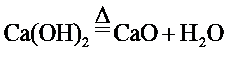
，该反应属于基本反应类型中的______。【答案】（1）酸性 （2）分解反应
【解析】
【小问1详解】
电石渣主要成分是氢氧化钙，氢氧化钙显碱性，能与酸性物质反应，可用于处理酸性废水；
【小问2详解】
该反应符合“一变多”的特点，属于分解反应。
31. 硫化钠（
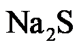
）广泛应用于染料、造纸等工业、以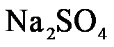
为原料制备的部分流程如图所示。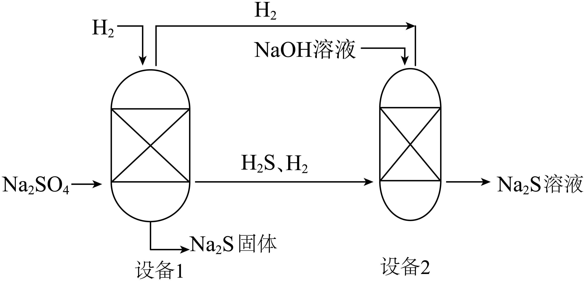
已知：
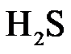
为副产物，直接排放会造成环境污染。（1）配平化学方程式：
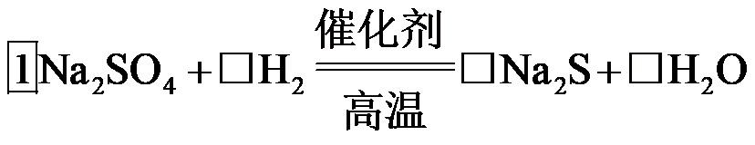
（2）中S的化合价为______。
（3）图中标示出的物质中，属于单质的是______。
（4）设备2中，加入NaOH溶液的目的是______。
【答案】（1）
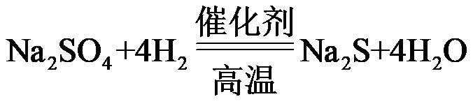
（2）-2 （3）氢气##H2 （4）吸收H2S，防止污染环境
【解析】
【小问1详解】
根据质量守恒定律，化学反应前后，原子的种类和数目不变，反应物中含2个Na、1个S、4个O，故硫化钠的化学计量数为1，水的化学计量数为4，生成物中含8个H，则氢气的化学计量数为4，则配平后为：；
【小问2详解】
硫化钠中钠元素显+1价，设硫元素化合价为x，根据化合物中，正、负化合价的代数和为零，可得：
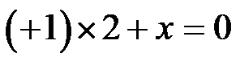
，x=-2；【小问3详解】
图中标示出的物质中，氢气是由氢元素组成的纯净物，属于单质；硫酸钠是由Na、S、O三种元素组成的纯净物，属于化合物；硫化钠是由Na、S元素组成的纯净物，属于化合物；硫化氢是由H、S元素组成的纯净物，属于化合物；氢氧化钠是由Na、O、H元素组成的纯净物，属于化合物，故填：氢气；
【小问4详解】
H2S为副产物，直接排放会造成环境污染，氢氧化钠能与硫化氢反应生成硫化钠和水，故加入氢氧化钠溶液的目的是：吸收H2S，防止污染环境。
【基本实验及其原理分析】
32. 补齐仪器与名称的连线。从A或B中任选一题作答，若均作答，按A计分。
A | B |
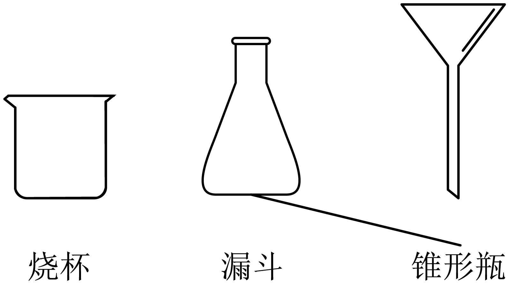 | 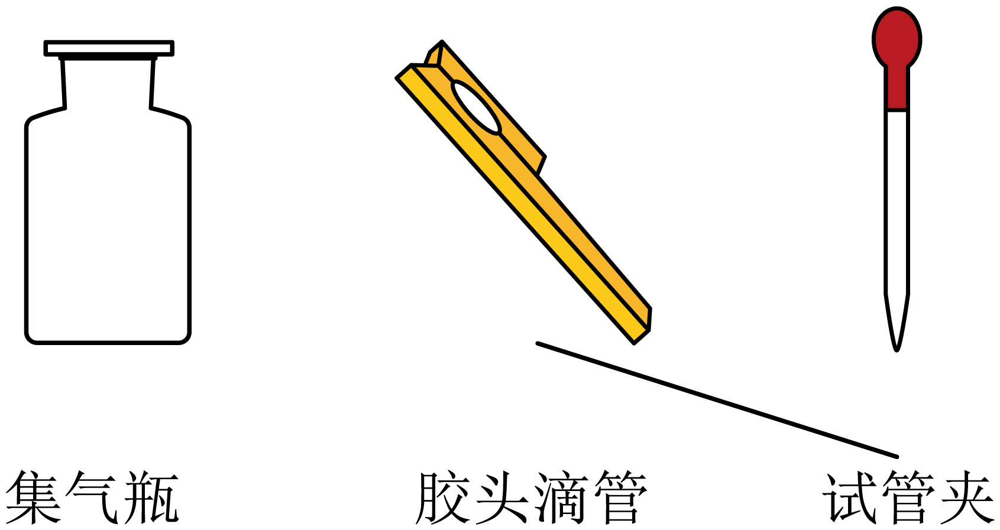 |
【答案】A、
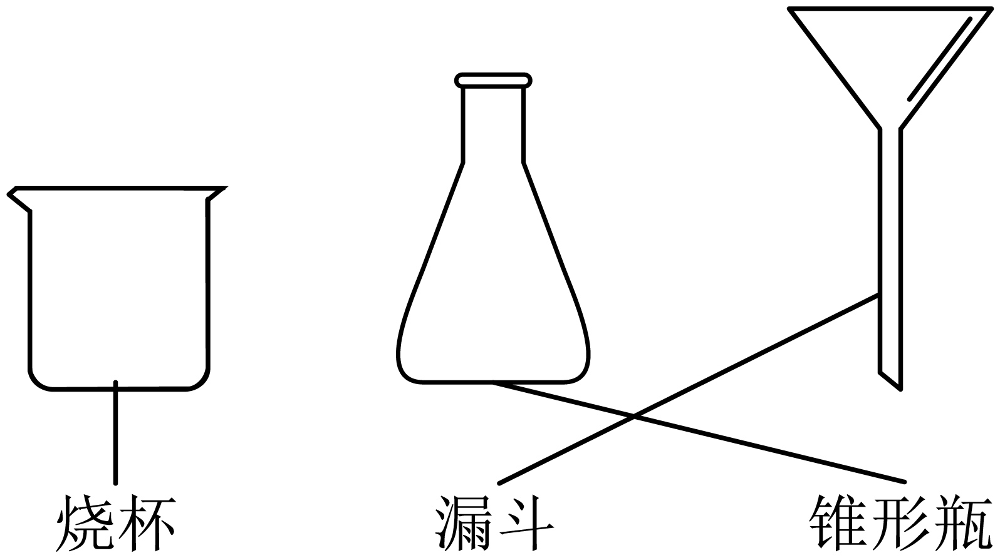
B、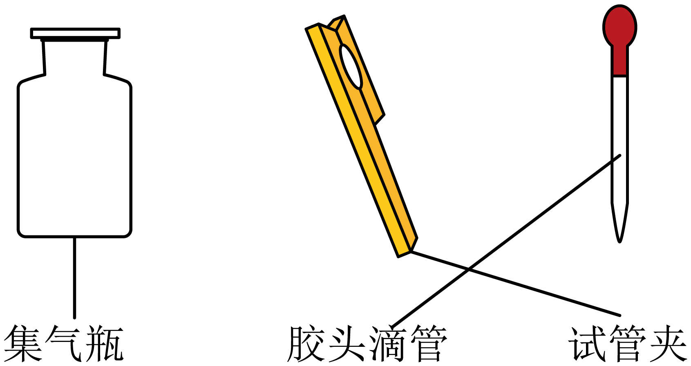
【解析】
【详解】A、由图可知，
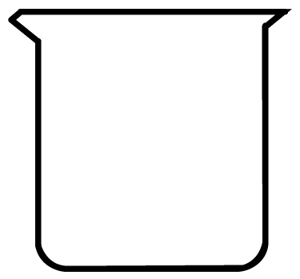
为烧杯， 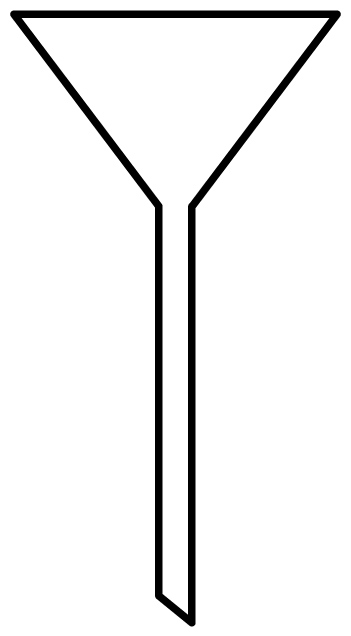
为漏斗，故图为： ；B、由图可知， 为集气瓶；为胶头滴管，故图为： 。
33. 选用如图装置进行的制取实验。
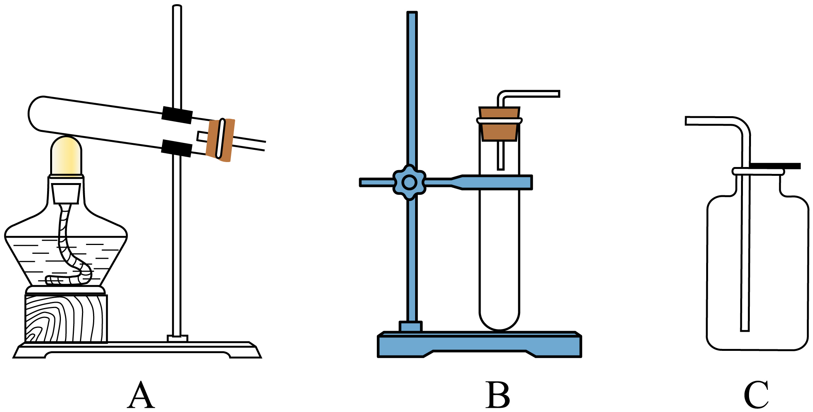
（1）用
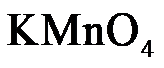
制取的化学方程式为______，发生装置是______（填序号）。（2）用向上排空气法收集的原因是______。
（3）用带火星的木条检验已收集满，现象是______。
【答案】（1） ①. 2KMnO4K2MnO4+MnO2+O2↑ ②. A
（2）氧气密度大于空气
（3）将带火星的木条放于集气瓶口，若木条复燃，则氧气集满
【解析】
【小问1详解】
高锰酸钾加热分解生成锰酸钾、二氧化锰和氧气，反应的化学方程式是2KMnO4K2MnO4+MnO2+O2↑，该反应的反应物是固体，反应条件是加热，属于固体加热型，发生装置是A；
【小问2详解】
氧气密度大于空气，可用用向上排空气法收集；
【小问3详解】
氧气具有助燃性，能使带火星的木条复燃，检验其收集满的方法是将带火星的木条放于集气瓶口，若木条复燃，则氧气集满。
34. 用如图所示装置和干燥紫色石蕊纸花进行实验，验证的性质。
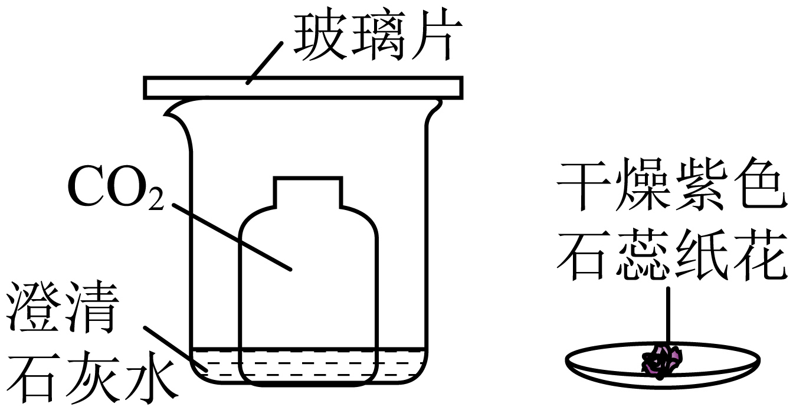
（1）观察到澄清石灰水变浑浊，反应的化学方程式为______；由该实验还可以得出分子具有的性质是______。
（2）为验证能与水反应，需进行的操作及现象是______。
【答案】（1） ①.
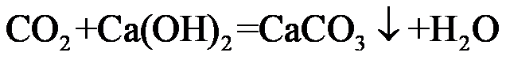
②. 分子在不断运动 （2）先将干燥紫色石蕊纸花放入盛有二氧化碳的集气瓶中，纸花不变色，将纸花取出喷水后再放入盛有二氧化碳的集气瓶中，纸花变红
【解析】
【小问1详解】
澄清石灰水变浑浊发生反应为二氧化碳和氢氧化钙反应生成碳酸钙和水，该反应的化学方程式为：；
该实验中，二氧化碳和澄清石灰水没有直接接触，一段时间后，澄清石灰水变浑浊，说明分子在不断运动，当二氧化碳分子运动到澄清石灰水处时，二氧化碳和氢氧化钙反应，澄清石灰水变浑浊；
【小问2详解】
验证二氧化碳能与水反应，可先将干燥紫色石蕊纸花放入盛有二氧化碳的集气瓶中，纸花不变色，说明二氧化碳不能使石蕊变色，将纸花取出喷水后再放入盛有二氧化碳的集气瓶中，纸花变红，说明二氧化碳和水发生了反应，故填：先将干燥紫色石蕊纸花放入盛有二氧化碳的集气瓶中，纸花不变色，将纸花取出喷水后再放入盛有二氧化碳的集气瓶中，纸花变红。
35. 用如图所示实验验证金属的性质。
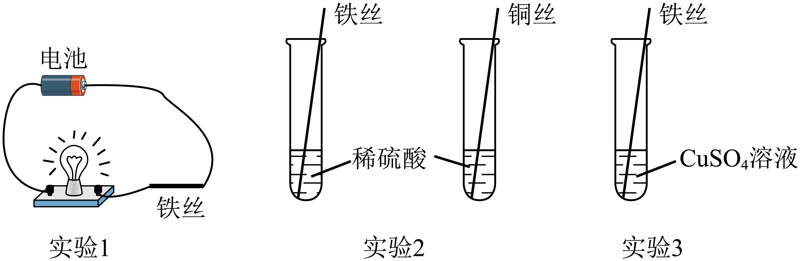
（1）实验1，观察到灯泡发光，说明铁具有的性质是______。
（2）实验2中反应化学方程式为______。
（3）实验3能证明铁的金属活动性比铜的强，现象是______。
【答案】（1）具有导电性
（2）Fe + H2SO4 ＝ FeSO4 + H2↑
（3）铁片表面有红色固体析出，溶液由蓝色逐渐变为浅绿色
【解析】
【小问1详解】
实验 1，观察到灯泡发光，说明铁具有导电性；
【小问2详解】
在金属活动顺序中，铁排在氢之前，能置换出酸中氢，铜排在氢之后，不能置换出酸中的氢，实验 2 中发生的反应是铁与硫酸反应生成硫酸亚铁和氢气，化学方程式为：Fe + H2SO4 ＝ FeSO4 + H2↑；
【小问3详解】
在金属活动性顺序里，位于前面的金属能把位于后面的金属从它们化合物的溶液里置换出来； 实验 3 中，将铁丝放入硫酸铜溶液中，若能证明铁的金属活动性比铜的强，现象是铁片表面有红色固体析出，溶液由蓝色逐渐变为浅绿色。
36. 用如图所示实验验证可燃物燃烧的条件。
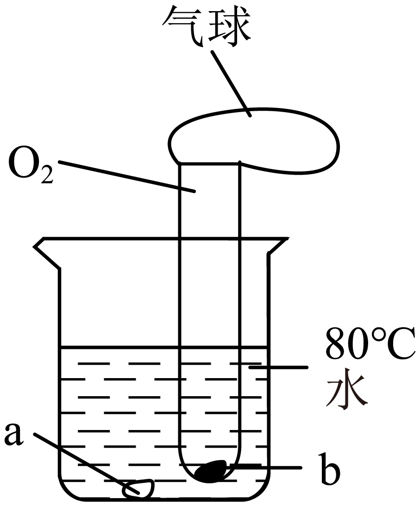
已知：白磷的着火点为40℃，红磷的着火点为240℃。
（1）若a、b均为白磷，可观察到的现象是______。
（2）若a、b均为红磷，判断该实验能否证明可燃物燃烧需要与接触，并说明理由：______。
【答案】（1）a处白磷不燃烧，b处白磷燃烧
（2）不能，因为温度未达到红磷的着火点，a、b处的红磷均不燃烧
【解析】
【小问1详解】
由图可知，a、b处白磷温度均达到着火点，但a处白磷未与氧气接触，故a处白磷不燃烧，b处白磷燃烧，故填：a处白磷不燃烧，b处白磷燃烧；
【小问2详解】
由题中信息可知，红磷的着火点是240℃，若a、b均为红磷，温度未达到红磷的着火点，a、b处的红磷均不燃烧，不满足单一变量原则，故无法证明可燃物燃烧需要与O2接触，故填：不能，因为温度未达到红磷的着火点，a、b处的红磷均不燃烧。
37. 完成实验报告。
实验 | 1 | 2 | 3 |
目的 | 验证不支持燃烧 | 鉴别NaOH溶液和盐酸 | 配制______NaCl溶液 |
操作 | 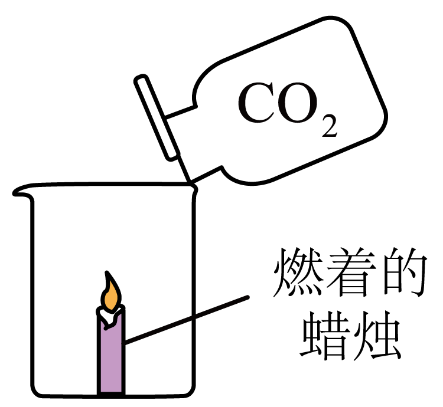 | 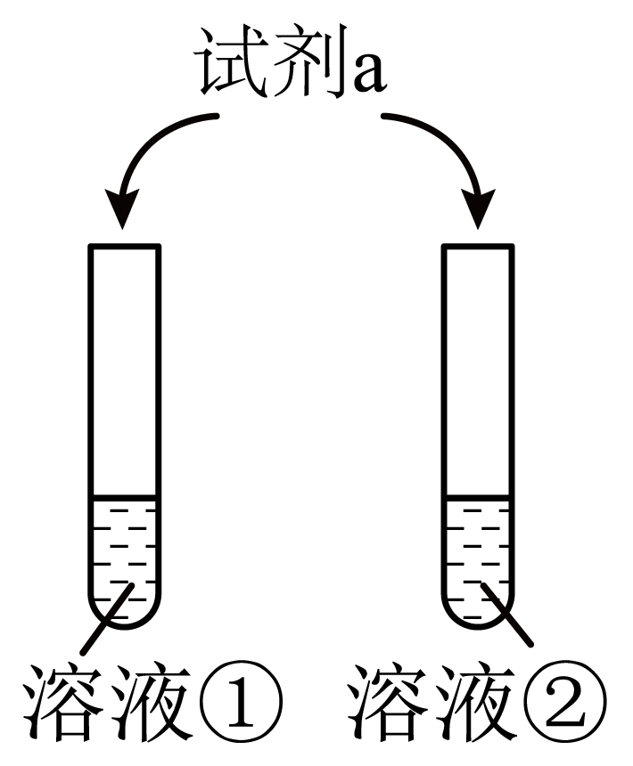 | 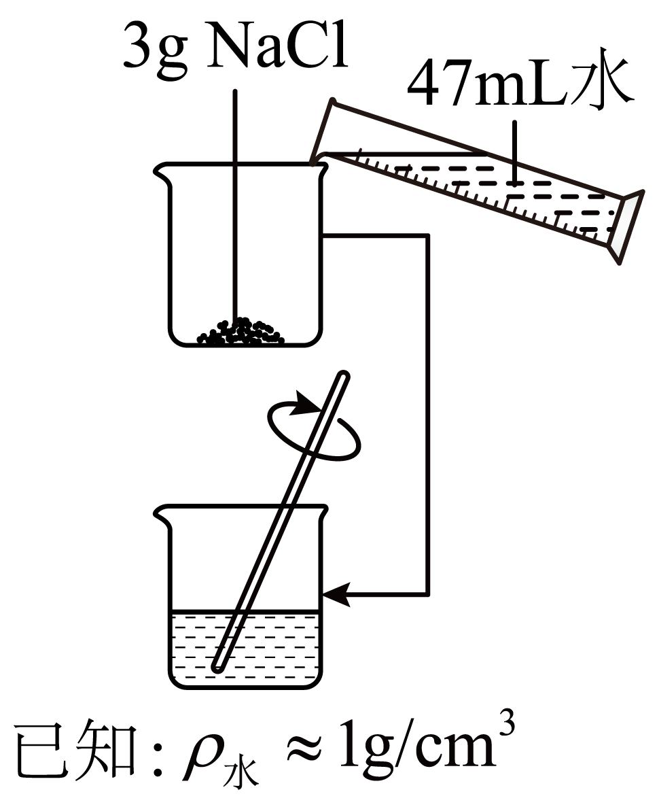 |
现象 | ______ | ①变红，②不变色 | 固体全部溶解 |
（1）实验1中，现象是______。
（2）实验2中，试剂a为______。
（3）补全实验3的目的：配制______NaCl溶液。
【答案】（1）蜡烛熄灭 （2）酚酞试液
（3）6%
【解析】
【小问1详解】
二氧化碳密度大于空气，二氧化碳不能燃烧也不能支持燃烧，实验 1 中，现象是蜡烛熄灭；
【小问2详解】
氢氧化钠溶液显碱性，能使酚酞试液变红，盐酸显酸性，不能使酚酞试液变色，实验 2 中，试剂 a 可以为酚酞试液；
【小问3详解】
实验 3 中3gNaCl溶于47mL（47g）水，所得溶液的溶质质量分数=
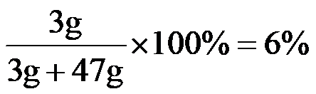
，因此：实验 3 的目的：配制6%的 NaCl 溶液。【科学探究】
38. 同学们把盛有自上而下依次呈现多种颜色溶液的试管称为“彩虹管”。小组同学看到某个“彩虹管”的制作过程（如图）后，对影响“彩虹管”效果的因素进行探究。
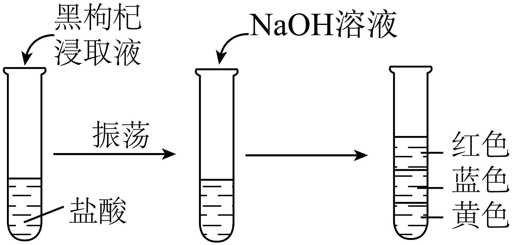
已知：“彩虹管”呈现出的颜色越多、保持时间越长，效果越好。
【进行实验】
实验1：用蒸馏水浸泡黑枸杞得到浸取液，分别滴入pH不同的无色溶液中，记录现象。
pH | ≤3 | 4～5 | 6～8 | 9～11 | 12 | ≥13 |
溶液颜色 | 红色 | 粉色 | 紫色 | 蓝色 | 绿色 | 黄色 |
实验2：向试管中加入6mL一定质量分数的盐酸、滴入5滴黑枸杞浸取液、振荡，再逐滴滴入约3mL一定质量分数的NaOH溶液，之后记录溶液颜色。
实验 | 盐酸中溶质的质量分数/% | NaOH溶液中溶质的质量分数/% | 溶液颜色 |
① | 5 | 5 | 红色 |
② | 5 | 10 | 自上而下依次为红色、蓝色、黄色，静置约6分钟只剩红色、黄色 |
③ | 5 | 15 | 自上而下依次为红色、蓝色、黄色，静置约20分钟仍无明显变化 |
④ | 10 | 5 | 自上而下为无色、红色 |
⑤ | 10 | 10 | 红色 |
⑥ | 10 | 15 | 自上而下依次为红色、蓝色、黄色，静置约6分钟只剩红色、黄色 |
【解释与结论】
（1）向pH=7的无色溶液中滴加黑枸杞浸取液，溶液颜色变为______。
（2）盐酸与NaOH反应的化学方程式为______。
（3）实验2中，①②③的目的是______。
（4）实验2中，“彩虹管”效果最佳的是③，理由是______。
【进一步探究】
查阅资料发现，在NaOH溶液中加入一定量可使“彩虹管”效果更好。小组同学设计实验3进行验证，并与实验2中③对照。
实验3：向100mL质量分数为15%的NaOH溶液中加入固体，搅拌后得到溶液a，进行如下实验并记录。
操作 | 现象 |
______，再逐滴滴入约3mL溶液a | 立即出现气泡；滴加完成后溶液颜色自上而下依次为红色、粉色、紫色、蓝色、绿色、黄色，静置约1小时仍无明显变化 |
【解释与结论】
（5）补全实验3的操作：______。
（6）实验3中观察到气泡，推测有气体生成，该气体是______。
（7）由实验2、3可知：制作“彩虹管”过程中，影响其效果的因素一定有______。
【答案】（1）紫色 （2）HCl+NaOH═NaCl+H2O
（3）验证盐酸和氢氧化钠反应的质量关系对 “彩虹管”效果的影响
（4）呈现出的颜色越多、保持时间越长
（5）向试管中加入6mL一定质量分数的盐酸、滴入5滴黑枸杞浸取液、振荡
（6）二氧化碳 （7）溶液pH的变化情况等（合理即可）
【解析】
【小问1详解】
pH=7的无色溶液显中性，滴加黑枸杞浸取液后，溶液颜色变为紫色；
【小问2详解】
盐酸与NaOH反应生成氯化钠和水，反应的化学方程式为HCl+NaOH═NaCl+H2O；
【小问3详解】
对比实验2中的①②③可知，是将3mL5%、10%、15%的NaOH溶液分别滴入6mL5%的盐酸和5滴黑枸杞浸取液混合溶液中，通过现象可得，实验①②③的目的是：验证盐酸和氢氧化钠反应的质量关系对 “彩虹管”效果的影响；
【小问4详解】
对比实验2中的①②③的现象可知，③中呈现出的颜色越多、保持时间越长，所以效果最好；
【小问5详解】
根据对比实验的要求可得，实验3的操作为：向试管中加入6mL一定质量分数的盐酸、滴入5滴黑枸杞浸取液、振荡，再逐滴滴入约3mL溶液a；
【小问6详解】
盐酸会和碳酸钠反应生成氯化钠、二氧化碳气体和水，所以该气体是二氧化碳；
【小问7详解】
由实验2、3的现象可知：制作“彩虹管”过程中，影响其效果的因素一定有：溶液pH的变化情况等。
【实际应用定量计算】
39. 氢化钛（
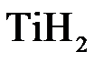
）作为储氢材料备受关注。用钛粉（Ti）生产的反应为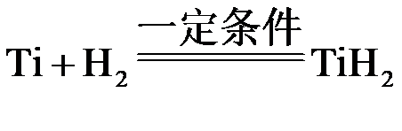
。若制得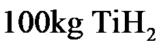
，计算参加反应的的质量（写出计算过程及结果）。【答案】设：参加反应的的质量为x。
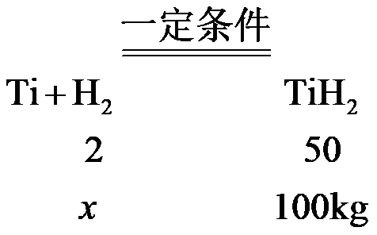
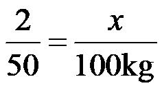
x=4kg；
答：参加反应的的质量为4kg。
【解析】
【详解】见答案。